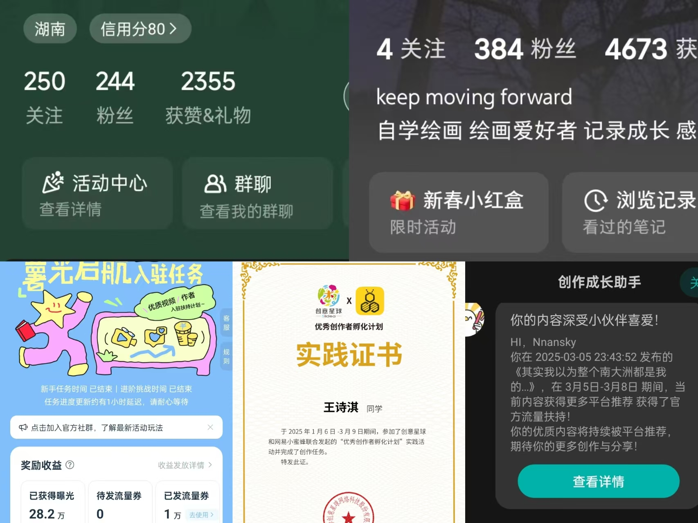

平台创作者计划精选内容
通过加入小红书、网易lofter、网易小蜜蜂的创作计划及实践活动，进一步探索内容创作和账号运营并参与了生态共建，其中活动均取得了一点小成果，也更好的培养了运营思维和传播技巧。

活动总览
这几个活动的周期大致为1-2个月，在这期间，各账号分别都收获了三位数的粉丝和四位数的点赞，尽管不是非常夸张夺人眼球的数据，但是表现稳定，投入也得到了一定的回报，更重要的是从现实的落地实践上，促进了对内容发布的思考，对平台生态的研究，对网感和用户喜好的了解。这段经历让我明白一件事：好的内容不是灵感迸发，而是一次次试错后的校准。创作者计划不只是让我学会了怎么写，更让我学会了怎么看数据、怎么听用户、怎么迭代自己。
我的角色： 独立运营账号，负责选题策划、文案撰写、数据分析、用户互动全流程
亮点成果
网易LOFTER
基于本人现实生活的经验和感兴趣的游戏，敏锐的发现了游戏设定中没有交代清楚容易产生误会的细节，相关讨论发布之后果然引起众多共鸣，因此单篇文章取得了19w＋的阅读量。
小红书
这个账号的主要内容是围绕我的爱好绘画所展开的，当我发现一开始试水的几个视频反响平平时，便去研究这个活动里其他创作者是怎么做的，如果没有顶牛的画技或者自带流量的热度，就需要顺势借助高热度的事物，因此在哪吒ip爆火之际，我便选择了它作为我的创作内容，数据表现为历史最佳，相关作品累计取得1000＋点赞，而在活动期间所有作品累计获得了近30w的浏览量。
网易小蜜蜂
我有幸加入了这个由网易和创意星球合作展开的声浪冬令营实践计划，亲身参与到这个新兴平台的生态共建，充分了解了内容创作者和平台之间的相互支持关系，得到了很多的心得体会和现实经验。